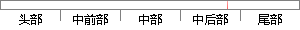

上面两节分别推导了两路输入信号的频差和时差参数的高精度测量算法，在实际的处理过程中，首先用 节的算法估计出两路信号的频差，在补偿了频差之后，再用 节中的算法估计信号的时差。
片段位置图

相似结果|
相似片段 1：，得到两路信号的时差τ? 。 2.3.4 算法总结 以上两节分别推导了两路输入信号频差和时差参数的高精度测量算法，在实际的处理过程中，首先用 2.2.2的算法测量出两路信号的频差，在补偿了该频差之后，再用 2.2.3节的算法测量信号的时差。若测量出的频差为 ?dω ，则补偿频差后的信号 '2 ( )y n 如下： ? /'2 2
|
※ 片段修改建议 ※
近似词参考：- 分别：别离 划分 离别
- 信号：旌旗灯号
- 测量：丈量
- 实际：现实
- 处理：处置 处置惩罚
- 过程中：过程当中
- 首先：起首
- 估计：估量 预计
- 信号：旌旗灯号
- 补偿：抵偿 赔偿
- 之后：以后
- 估计：估量 预计
- 信号：旌旗灯号
系统自动生成语句：上面两节别离推导了两路输入旌旗灯号的频差和时差参数的高精度丈量算法，在现实的处置过程当中，起首用 节的算法估量出两路旌旗灯号的频差，在抵偿了频差以后，再用 节中的算法估量旌旗灯号的时差。
注：本片段修改建议为系统自动生成，仅供参考。